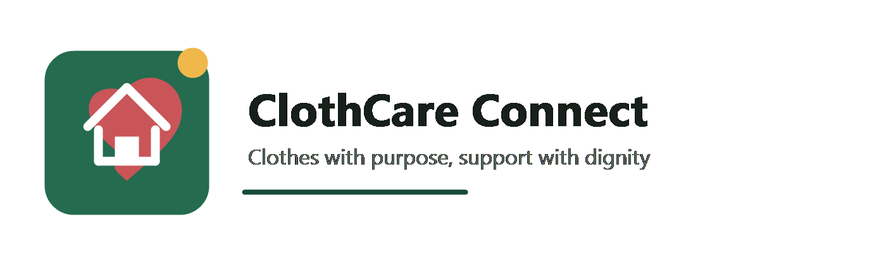

Pick your role
Select NGO if you need clothing support, or Helper if you can contribute.

Community clothing support
We believe that a simple act of giving can make a real difference in someone's life. Our platform brings together clothing stores, NGOs, orphanages, and old-age homes, making it easier for people and organizations to support those who need it most. By creating meaningful connections, we aim to build stronger communities and spread kindness, one donation at a time.
Clothes with purpose, support with dignity.
Keep this section short and human. The goal is to make visitors feel clear, trusted, and ready to fill the right form.
Select NGO if you need clothing support, or Helper if you can contribute.
The Google Form collects the contact and location details needed to coordinate.
Our team will match available helpers with the communities that need them.
Every year, thousands of perfectly usable clothes are discarded, burned, or left unused, contributing to environmental pollution and unnecessary waste. At the same time, countless children, elderly individuals, and underprivileged communities struggle to access basic clothing.
Our initiative aims to bridge this gap by creating a simple and efficient connection between clothing retailers, NGOs, orphanages, old-age homes, and charitable organizations. Through our platform, clothing stores can easily share details of surplus, unsold, or out-of-fashion garments that would otherwise go to waste. These clothes can then be redirected to organizations that need them most, giving them a second life and creating a meaningful social impact.
By connecting donors with beneficiaries, we strive to reduce textile waste, support vulnerable communities, and promote a more sustainable and compassionate society. Together, we can transform unused clothing from a source of pollution into a source of dignity, comfort, and hope.